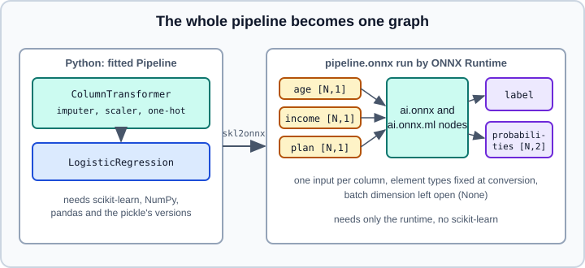

Exporting Pipelines to ONNX
|
This content was generated with the assistance of AI and should be verified against the official documentation before being relied on in production. |
This page covers the scikit-learn side of ONNX export: what the converter needs, how a whole pipeline over a DataFrame is converted, how to verify the result and where conversion stops. What ONNX is (graph, initialisers, IR version versus opset, execution providers) and how to run and inspect a file with ONNX Runtime are explained once, for PyTorch, Keras and scikit-learn together, in ONNX & Model Interoperability; that is not repeated here. The PyTorch exporter has its own page, Exporting to ONNX. The choice between pickle, joblib, skops and ONNX, and the security of loading each, is in Model Persistence and Security; this page is the detailed version of its ONNX section.
The official model persistence page (section 11.2, anchor #onnx, scikit-learn 1.9.1 documentation) says that ONNX suits cases where the persisted artifact is used for predictions without loading the Python object, and where the serving environment must be lean because the ONNX runtime does not require Python. It also states the limits: not all scikit-learn models are supported, the converter is limited to core scikit-learn and does not support most third-party estimators, and writing a custom converter is possible but poorly documented. Its sample code passes target_opset=12, which is outdated (see below).
Examples were run on Python 3.13 with scikit-learn 1.9.1, skl2onnx 1.20.0, onnx 1.23.2, ONNX Runtime 1.31.1, pandas 3.1.0 and NumPy 2.5.4 on 2026-11-01. Converter support differs between estimators and versions (see What does not convert), so check the project’s supported-models page and test your own model.
Installing
skl2onnx (the import name of the package called sklearn-onnx) and onnxruntime are separate projects, not part of scikit-learn. Convert in a build or training environment; the serving environment needs only the runtime.
pip install scikit-learn skl2onnx onnxruntime pandasSource: https://onnx.ai/sklearn-onnx/
onnxruntime is the CPU build; GPU builds are separate packages, described in ONNX & Model Interoperability.
Converting a pipeline over a DataFrame
A typical scikit-learn model is a Pipeline that starts with a ColumnTransformer over named DataFrame columns. ONNX has no DataFrame: the converter needs to be told the name, element type and shape of every input, and the exported graph then expects one tensor per input. The usual choice is one input per column, so the serving code can map JSON fields to inputs directly.

import numpy as np
import onnx
import onnxruntime as ort
import pandas as pd
import skl2onnx
from skl2onnx import convert_sklearn, get_latest_tested_opset_version
from skl2onnx.common.data_types import FloatTensorType, StringTensorType
from sklearn.compose import ColumnTransformer
from sklearn.impute import SimpleImputer
from sklearn.linear_model import LogisticRegression
from sklearn.pipeline import Pipeline
from sklearn.preprocessing import OneHotEncoder, StandardScaler
print("skl2onnx", skl2onnx.__version__, "onnx", onnx.__version__, "onnxruntime", ort.__version__)
print("latest tested opset:", get_latest_tested_opset_version())
rng = np.random.default_rng(0)
n = 400
df = pd.DataFrame({
"age": rng.integers(18, 80, n).astype("float32"),
"income": rng.normal(40, 10, n).astype("float32"),
"plan": rng.choice(["free", "pro", "team"], n),
})
df.loc[rng.choice(n, 20, replace=False), "age"] = np.nan
y = ((df["income"] > 40) ^ (df["plan"] == "pro")).astype(int).to_numpy()
pre = ColumnTransformer([
("num", Pipeline([("imp", SimpleImputer(strategy="median")), ("sc", StandardScaler())]), ["age", "income"]),
("cat", OneHotEncoder(handle_unknown="ignore"), ["plan"]),
])
model = Pipeline([("pre", pre), ("clf", LogisticRegression(max_iter=1000))]).fit(df, y)
initial_types = [
("age", FloatTensorType([None, 1])),
("income", FloatTensorType([None, 1])),
("plan", StringTensorType([None, 1])),
]
onx = convert_sklearn(
model,
initial_types=initial_types,
options={id(model): {"zipmap": False}},
)
onnx.checker.check_model(onx)
print("opsets:", {o.domain or "ai.onnx": o.version for o in onx.opset_import}, "IR", onx.ir_version)
sess = ort.InferenceSession(onx.SerializeToString(), providers=["CPUExecutionProvider"])
print([(i.name, i.type, i.shape) for i in sess.get_inputs()])
print([(o.name, o.type, o.shape) for o in sess.get_outputs()])
feed = {
"age": df[["age"]].to_numpy(),
"income": df[["income"]].to_numpy(),
"plan": df[["plan"]].to_numpy().astype(object),
}
labels, proba = sess.run(None, feed)
print("labels agree:", np.array_equal(labels, model.predict(df)))
print("max proba diff:", float(np.abs(proba - model.predict_proba(df)).max()))
print("one row:", sess.run(None, {k: v[:1] for k, v in feed.items()})[0])Output:
skl2onnx 1.20.0 onnx 1.23.2 onnxruntime 1.31.1
latest tested opset: 22
opsets: {'ai.onnx': 13, 'ai.onnx.ml': 1} IR 10
[('age', 'tensor(float)', [None, 1]), ('income', 'tensor(float)', [None, 1]), ('plan', 'tensor(string)', [None, 1])]
[('label', 'tensor(int64)', [None]), ('probabilities', 'tensor(float)', [None, 2])]
labels agree: True
max proba diff: 6.255421636236491e-08
one row: [0]Source: https://onnx.ai/sklearn-onnx/
What the example shows:
-
initial_typesis a list of(name, type)pairs.FloatTensorType([None, 1])is a float32 column vector with an open batch dimension (None);StringTensorTypeis for text categories;Int64TensorTypeandDoubleTensorTypeexist for the other element types. The names are the input names of the ONNX graph. -
Missing values pass through: the NaN values in
ageare imputed inside the graph by the same median that scikit-learn learned. -
No
target_opsetis passed, so the converter targets the newest opset it was tested with, whichget_latest_tested_opset_version()reports (22 here), and writes only the opsets the nodes actually need (13 and 1 here). Passtarget_opset(an integer, or a dictionary with one entry per domain) only to cap the opset at the maximum of a deployed runtime that is older than the converter; the runtime side of the opset question is in ONNX & Model Interoperability. -
options={id(model): {"zipmap": False}}targets the options at one object. By default a classifier returns its probabilities through aZipMapoperator as a list of dictionaries, which is slow and awkward; withzipmapset toFalsethe output is a plain[N, n_classes]array. -
onnx.checker.check_modelvalidates the structure of the file; it does not say that the numbers are right.
to_onnx(model, X_sample) is a shorter form for a model whose inputs are one numeric array: it infers the type and the number of columns from a sample row, as in the short example in Model Persistence. Use initial_types as above as soon as the input has named or mixed-type columns.
Verify the export
An export is a transformation, so test it like one, and put the test in your CI.
-
Compare predictions on real data, not on a handful of random rows. For classifiers compare the labels exactly and the probabilities within a tolerance; for regressors compare values within a tolerance. In the example the probabilities differed by about \(6 \times 10^{-8}\) because the arithmetic ran in float32.
-
Expect rare label flips. Samples very close to a decision boundary can flip after the float64 to float32 rounding. Count the disagreements on a few thousand real rows and decide whether your application tolerates them.
-
Test the batch dimension. Run one row, many rows and zero rows if your service can receive them; the example runs one row.
-
Pin the triple of scikit-learn, skl2onnx and ONNX Runtime versions together with the opset in your lock file (see Reproducibility & MLOps Basics), and convert again whenever the scikit-learn version changes: ONNX removes the pickle’s dependence on scikit-learn’s class layout for the serving side, but the converter itself is tied to the scikit-learn version it was written against.
Element types: float32 versus float64
scikit-learn estimators compute in float64 for most of their inputs, while the ONNX converters default to float32 inputs. For many models the difference is below tolerance, but not every combination of converter and runtime accepts double precision. A random-forest regressor exported with the default float32 input agreed with scikit-learn to about \(7 \times 10^{-5}\). The same forest exported with a DoubleTensorType input was accepted by the converter but ONNX Runtime 1.31.1 refused to load the file with Type Error: Type (tensor(double)) of output arg ... of node (TreeEnsembleRegressor) does not match expected type (tensor(float)).
import numpy as np
import onnxruntime as ort
from skl2onnx import to_onnx
from skl2onnx.common.data_types import DoubleTensorType
from sklearn.datasets import make_regression
from sklearn.ensemble import RandomForestRegressor
X, y = make_regression(n_samples=500, n_features=6, random_state=0)
rf = RandomForestRegressor(n_estimators=30, random_state=0).fit(X, y)
for name, kw, Xin in [("float32", dict(X=X[:1].astype(np.float32)), X.astype(np.float32)),
("float64", dict(initial_types=[("X", DoubleTensorType([None, 6]))]), X)]:
try:
onx = to_onnx(rf, **kw)
s = ort.InferenceSession(onx.SerializeToString(), providers=["CPUExecutionProvider"])
pred = s.run(None, {"X": Xin})[0].ravel()
print(name, "max abs diff vs scikit-learn:", float(np.abs(pred - rf.predict(X)).max()))
except Exception as exc:
print(name, type(exc).__name__, str(exc)[:200])Output:
float32 max abs diff vs scikit-learn: 7.430018439436026e-05
float64 Fail [ONNXRuntimeError] : 1 : FAIL : Type Error: Type (tensor(double)) of output arg (variable) of node (TreeEnsembleRegressor) does not match expected type (tensor(float)).Source: https://onnx.ai/sklearn-onnx/
This is a property of that converter and runtime pair at these versions, not a general rule: newer releases of either may support double precision for tree ensembles. The lesson is to export with the element type you intend to serve, then load the file in the runtime version you deploy, before shipping.
What does not convert
Conversion fails loudly at export time when it cannot do the job, which is the good case. Examples with the versions above:
-
A
FunctionTransformerthat wraps a function (np.log1p) failed withRuntimeError: FunctionTransformer is not supported unless the transform function is None (= identity). Replace it by a transformer the converter knows, do that step before the model in the serving code, or write a converter. -
Random forests converted, but a fitted
HistGradientBoostingClassifierdid not, although the converter’s supported-models page lists the histogram gradient-boosting classes:to_onnxfailed withValueError: Unable to create node 'TreeEnsembleClassifier' ..., caused byTypeError: Field onnx.AttributeProto.ints: Expected an int, got a boolean.The Model Persistence page also records a conversion error for this class. Conversion support depends on the combination of scikit-learn, converter and onnx versions, so test your exact model and versions rather than relying on a list. -
Third-party estimators and your own classes (see Custom Estimators) have no converter. The converter documentation describes registering a custom shape calculator and converter for a class, but, as the scikit-learn user guide itself warns, that route can be hard. A common alternative is to keep custom feature engineering in Python before the ONNX call and export only the standard part of the pipeline.
-
Gradient boosting libraries outside scikit-learn (XGBoost, LightGBM, CatBoost) are not covered by skl2onnx’s core scikit-learn support; check each library’s documentation for its export options, and see HistGradientBoosting vs XGBoost, LightGBM & CatBoost.
-
Neural networks trained in PyTorch or Keras use the framework exporters, not skl2onnx: Exporting to ONNX and ONNX & Model Interoperability. For
MLPClassifiersee Neural Networks: MLPClassifier & MLPRegressor.
Serving the file
A model service loads the .onnx file once at start-up into an InferenceSession, converts each request into the named input arrays, runs the session and turns the outputs into a response. Do the type conversion the training pipeline did on the DataFrame in one place (floats as float32, strings as objects, shape [N, 1]), and put the conversion code under the same test as the export. For an HTTP service see Serving Data Science and AI and Deploying & Serving Models. An ONNX file is safer than a pickle, but it still describes computation: the user guide recommends running ONNX models in a sandboxed environment to limit computational and memory exploits.
ONNX, skops or pickle?
| Situation | Prefer |
|---|---|
Serving from another language, a minimal image without scikit-learn, or hardware execution providers |
ONNX, with the verification above. |
The model must be reloaded as a scikit-learn object (to inspect, refit or explain it) by code you control |
|
The pipeline contains custom Python code that is hard to convert |
Keep the Python object and ship it in a container with pinned versions, or convert only the standard part. |
Interpretation, calibration or threshold tuning is needed after training |
Do it before export (Calibration, Decision Threshold) and export the final, frozen pipeline. |
Common pitfalls
-
Hard-coding
target_opset=12copied from an old page. Leave the converter’s default, and cap the opset only when the deployed runtime is older than the converter. -
Feeding float64 NumPy arrays to a float32 input (ONNX Runtime rejects the type) or forgetting that string inputs must be object arrays of shape
[N, 1]. -
Exporting a model whose preprocessing happens outside the pipeline (a separate
pd.get_dummiesor scaling step), then serving without it. -
Leaving
zipmapon and paying for a list of dictionaries per request. -
Trusting
check_modelinstead of comparing predictions. -
Converting once and never again after upgrading scikit-learn or the converter.
-
Assuming the file hides secrets: it contains the learned parameters and category values in the clear.
Where older books and tutorials are outdated
-
Older material often uses
target_opset=9to12andconvert_sklearnwith the namesfloat_inputandFloatTensorType([None, 4])for every model. Those values still load but are old; leave the opset at the converter’s default (capped only for an older runtime) and name inputs after your columns. -
Older guides present ONNX as covering "all of scikit-learn". The official persistence page states that not all models are supported and that third-party estimators generally are not.
-
Tutorials that tell you to deploy a pickle to production by default do not discuss the code execution risk; compare the options in Model Persistence.